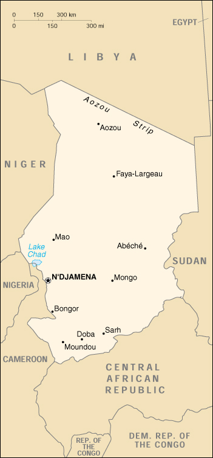

|
Chad | |
| Introduction Geography People Government Economy Communications Transportation Military Transnational Issues | ||
|  | ||
| Chad | Introduction | Top of Page |
| Background: | Chad, part of France's African holdings until 1960, endured three decades of ethnic warfare as well as invasions by Libya before a semblance of peace was finally restored in 1990. The government eventually suppressed or came to terms with most political-military groups, settled a territorial dispute with Libya on terms favorable to Chad, drafted a democratic constitution, and held multiparty presidential and National Assembly elections in 1996 and 1997 respectively. In 1998 a new rebellion broke out in northern Chad, which continued to escalate throughout 2000. Despite movement toward democratic reform, power remains in the hands of a northern ethnic oligarchy. |
| Chad | Geography | Top of Page |
| Location: | Central Africa, south of Libya |
| Geographic coordinates: | 15 00 N, 19 00 E |
| Map references: | Africa |
| Area: |
total:
1.284 million sq km
land: 1,259,200 sq km water: 24,800 sq km |
| Area - comparative: | slightly more than three times the size of California |
| Land boundaries: |
total:
5,968 km
border countries: Cameroon 1,094 km, Central African Republic 1,197 km, Libya 1,055 km, Niger 1,175 km, Nigeria 87 km, Sudan 1,360 km |
| Coastline: | 0 km (landlocked) |
| Maritime claims: | none (landlocked) |
| Climate: | tropical in south, desert in north |
| Terrain: | broad, arid plains in center, desert in north, mountains in northwest, lowlands in south |
| Elevation extremes: |
lowest point:
Djourab Depression 160 m
highest point: Emi Koussi 3,415 m |
| Natural resources: | petroleum (unexploited but exploration under way), uranium, natron, kaolin, fish (Lake Chad) |
| Land use: |
arable land:
3%
permanent crops: 0% permanent pastures: 36% forests and woodland: 26% other: 35% (1993 est.) |
| Irrigated land: | 140 sq km (1993 est.) |
| Natural hazards: | hot, dry, dusty harmattan winds occur in north; periodic droughts; locust plagues |
| Environment - current issues: | inadequate supplies of potable water; improper waste disposal in rural areas contributes to soil and water pollution; desertification |
| Environment - international agreements: |
party to:
Biodiversity, Climate Change, Desertification, Endangered Species, Nuclear Test Ban, Ozone Layer Protection, Wetlands
signed, but not ratified: Law of the Sea, Marine Dumping |
| Geography - note: | landlocked; Lake Chad is the most significant water body in the Sahel |
| Chad | People | Top of Page |
| Population: | 8,707,078 (July 2001 est.) |
| Age structure: |
0-14 years:
47.73% (male 2,091,724; female 2,064,514)
15-64 years: 49.46% (male 2,035,099; female 2,271,389) 65 years and over: 2.81% (male 101,579; female 142,773) (2001 est.) |
| Population growth rate: | 3.29% (2001 est.) |
| Birth rate: | 48.28 births/1,000 population (2001 est.) |
| Death rate: | 15.4 deaths/1,000 population (2001 est.) |
| Net migration rate: | 0 migrant(s)/1,000 population (2001 est.) |
| Sex ratio: |
at birth:
1.04 male(s)/female
under 15 years: 1.01 male(s)/female 15-64 years: 0.9 male(s)/female 65 years and over: 0.71 male(s)/female total population: 0.94 male(s)/female (2001 est.) |
| Infant mortality rate: | 95.06 deaths/1,000 live births (2001 est.) |
| Life expectancy at birth: |
total population:
50.88 years
male: 48.86 years female: 52.98 years (2001 est.) |
| Total fertility rate: | 6.56 children born/woman (2001 est.) |
| HIV/AIDS - adult prevalence rate: | 2.69% (1999 est.) |
| HIV/AIDS - people living with HIV/AIDS: | 92,000 (1999 est.) |
| HIV/AIDS - deaths: | 10,000 (1999 est.) |
| Nationality: |
noun:
Chadian(s)
adjective: Chadian |
| Ethnic groups: |
Muslims, commonly referred to as "northerners" or "gorane" (Arabs, Toubou, Hadjerai, Fulbe, Kotoko, Kanembou, Baguirmi, Boulala, Zaghawa, and Maba); non-Muslims, commonly referred to as "southerners" (Sara, Ngambaye, Mbaye, Goulaye, Moundang, Moussei, Massa) including nonindigenous 150,000 (of whom 1,000 are French)
note: ethnicity and regional background more commonly used to identify Chadians than religious affiliation |
| Religions: | Muslim 50%, Christian 25%, indigenous beliefs (mostly animism) 25% |
| Languages: | French (official), Arabic (official), Sara and Sango (in south), more than 100 different languages and dialects |
| Literacy: |
definition:
age 15 and over can read and write French or Arabic
total population: 48.1% male: 62.1% female: 34.7% (1995 est.) |
| Chad | Government | Top of Page |
| Country name: |
conventional long form:
Republic of Chad
conventional short form: Chad local long form: Republique du Tchad local short form: Tchad |
| Government type: | republic |
| Capital: | N'Djamena |
| Administrative divisions: | 14 prefectures (prefectures, singular - prefecture); Batha, Biltine, Borkou-Ennedi-Tibesti, Chari-Baguirmi, Guera, Kanem, Lac, Logone Occidental, Logone Oriental, Mayo-Kebbi, Moyen-Chari, Ouaddai, Salamat, Tandjile |
| Independence: | 11 August 1960 (from France) |
| National holiday: | Independence Day, 11 August (1960) |
| Constitution: | passed by referendum 31 March 1995 |
| Legal system: | based on French civil law system and Chadian customary law; has not accepted compulsory ICJ jurisdiction |
| Suffrage: | 18 years of age; universal |
| Executive branch: |
chief of state:
President Lt. Gen. Idriss DEBY (since 4 December 1990)
head of government: Prime Minister Nagoum YAMASSOUM (since 13 December 1999) cabinet: Council of State, members appointed by the president on the recommendation of the prime minister elections: president elected by popular vote to serve five-year term; if no candidate receives at least 50% of the total vote, the two candidates receiving the most votes must stand for a second round of voting; last held 20 May 2001 (next to be held NA 2006); prime minister appointed by the president election results: Lt. Gen. Idriss DEBY elected president; percent of vote - Lt. Gen. Idriss DEBY 63%, Ngarlegy YORONGAR 16%, Saleh KEBZABO 7% note: government coalition - MPS, UNDR, and URD |
| Legislative branch: |
unicameral National Assembly (125 seats; members elected by popular vote to serve four-year terms); replaces the Higher Transitional Council or the Conseil Superieur de Transition
elections: National Assembly - last held in two rounds on 5 January and 23 February 1997 (next to be held in late 2001); in the first round of voting some candidates won clear victories by receiving 50% or more of the vote; where that did not happen, the two highest scoring candidates stood for a second round of voting election results: percent of vote by party - NA%; seats by party - MPS 65, URD 29, UNDR 15, RDP 3, others 13 |
| Judicial branch: | Supreme Court; Court of Appeal; Criminal Courts; Magistrate Courts |
| Political parties and leaders: | National Union for Development and Renewal or UNDR [Saleh KEBZABO]; Patriotic Salvation Movement or MPS [Mahamat Saleh AHMAT, chairman] (originally in opposition but now the party in power and the party of the president); Rally for Democracy and Progress or RDP [Lal Mahamat CHOUA]; Union for Renewal and Democracy or URD [Gen. Wadal Abdelkader KAMOUGUE] |
| Political pressure groups and leaders: | NA |
| International organization participation: | ACCT, ACP, AfDB, BDEAC, CEEAC, CEMAC, ECA, FAO, FZ, G-77, IBRD, ICAO, ICFTU, ICRM, IDA, IDB, IFAD, IFC, IFRCS, ILO, IMF, Intelsat, Interpol, IOC, ITU, NAM, OAU, OIC, OPCW, UN, UNCTAD, UNESCO, UNIDO, UPU, WCL, WHO, WIPO, WMO, WToO, WTrO |
| Diplomatic representation in the US: |
chief of mission:
Ambassador Hassaballah Abdelhadi Ahmat SOUBIANE
chancery: 2002 R Street NW, Washington, DC 20009 telephone: [1] (202) 462-4009 FAX: [1] (202) 265-1937 |
| Diplomatic representation from the US: |
chief of mission:
Ambassador Christopher E. GOLDTHWAIT
embassy: Avenue Felix Eboue, N'Djamena mailing address: B. P. 413, N'Djamena telephone: [235] (51) 70-09, (51) 90-52, (51) 92-33 FAX: [235] (51) 56-54 |
| Flag description: | three equal vertical bands of blue (hoist side), yellow, and red; similar to the flag of Romania; also similar to the flags of Andorra and Moldova, both of which have a national coat of arms centered in the yellow band; design was based on the flag of France |
| Chad | Economy | Top of Page |
| Economy - overview: | Landlocked Chad's economic development suffers from its geographic remoteness, drought, lack of infrastructure, and political turmoil. About 85% of the population depends on agriculture, including the herding of livestock. Of Africa's Francophone countries, Chad benefited least from the 50% devaluation of their currencies in January 1994. Financial aid from the World Bank, the African Development Fund, and other sources is directed largely at the improvement of agriculture, especially livestock production. The World Bank's decision to back the Doba oil field development and the Chad-Cameroon pipeline will add Chad to the group of already booming West African oil exporters. However, the rank and file may not benefit much from the oil development projects. |
| GDP: | purchasing power parity - $8.1 billion (2000 est.) |
| GDP - real growth rate: | 4% (2000 est.) |
| GDP - per capita: | purchasing power parity - $1,000 (2000 est.) |
| GDP - composition by sector: |
agriculture:
40%
industry: 14% services: 46% (1998) |
| Population below poverty line: | 64% (1995 est.) |
| Household income or consumption by percentage share: |
lowest 10%:
NA%
highest 10%: NA% |
| Inflation rate (consumer prices): | 3% (2000 est.) |
| Labor force: | NA |
| Labor force - by occupation: | agriculture 85% (subsistence farming, herding, and fishing) |
| Unemployment rate: | NA% |
| Budget: |
revenues:
$198 million
expenditures: $218 million, including capital expenditures of $146 million (1998 est.) |
| Industries: | cotton textiles, meatpacking, beer brewing, natron (sodium carbonate), soap, cigarettes, construction materials |
| Industrial production growth rate: | 5% (1995) |
| Electricity - production: | 90 million kWh (1999) |
| Electricity - production by source: |
fossil fuel:
100%
hydro: 0% nuclear: 0% other: 0% (1999) |
| Electricity - consumption: | 83.7 million kWh (1999) |
| Electricity - exports: | 0 kWh (1999) |
| Electricity - imports: | 0 kWh (1999) |
| Agriculture - products: | cotton, sorghum, millet, peanuts, rice, potatoes, manioc (tapioca); cattle, sheep, goats, camels |
| Exports: | $172 million (f.o.b., 2000 est.) |
| Exports - commodities: | cotton, cattle, textiles |
| Exports - partners: | Portugal 38%, Germany 12%, Thailand, Costa Rica, South Africa, France (1999) |
| Imports: | $223 million (f.o.b., 2000 est.) |
| Imports - commodities: | machinery and transportation equipment, industrial goods, petroleum products, foodstuffs, textiles |
| Imports - partners: | France 40%, Cameroon 13%, Nigeria 12%, India 5% (1999) |
| Debt - external: | $1 billion (1999 est.) |
| Economic aid - recipient: | $238.3 million (1995); note - $125 million committed by Taiwan (August 1997); $30 million committed by African Development Bank |
| Currency: | Communaute Financiere Africaine franc (XAF); note - responsible authority is the Bank of the Central African States |
| Currency code: | XAF |
| Exchange rates: | Communaute Financiere Africaine francs (XAF) per US dollar - 699.21 (January 2001), 711.98 (2000), 615.70 (1999), 589.95 (1998), 583.67 (1997), 511.55 (1996); note - from 1 January 1999, the XAF is pegged to the euro at a rate of 655.957 XAF per euro |
| Fiscal year: | calendar year |
| Chad | Communications | Top of Page |
| Telephones - main lines in use: | 7,000 (1997) |
| Telephones - mobile cellular: | NA |
| Telephone system: |
general assessment:
primitive system
domestic: fair system of radiotelephone communication stations international: satellite earth station - 1 Intelsat (Atlantic Ocean) |
| Radio broadcast stations: | AM 2, FM 3, shortwave 5 (1998) |
| Radios: | 1.67 million (1997) |
| Television broadcast stations: | 1 (1997) |
| Televisions: | 10,000 (1997) |
| Internet country code: | .td |
| Internet Service Providers (ISPs): | 1 (2000) |
| Internet users: | 1,000 (2000) |
| Chad | Transportation | Top of Page |
| Railways: | 0 km |
| Highways: |
total:
33,400 km
paved: 267 km unpaved: 33,133 km (1996) |
| Waterways: | 2,000 km |
| Ports and harbors: | none |
| Airports: | 50 (2000 est.) |
| Airports - with paved runways: |
total:
7
over 3,047 m: 2 2,438 to 3,047 m: 3 1,524 to 2,437 m: 1 under 914 m: 1 (2000 est.) |
| Airports - with unpaved runways: |
total:
43
1,524 to 2,437 m: 12 914 to 1,523 m: 20 under 914 m: 11 (2000 est.) |
| Chad | Military | Top of Page |
| Military branches: | Armed Forces (includes Ground Force, Air Force, and Gendarmerie), Republican Guard, Rapid Intervention Force, Police, Rural and Nomadic Guard (GNNT) |
| Military manpower - military age: | 20 years of age |
| Military manpower - availability: | males age 15-49: 1,814,578 (2001 est.) |
| Military manpower - fit for military service: | males age 15-49: 949,997 (2001 est.) |
| Military manpower - reaching military age annually: | males: 82,003 (2001 est.) |
| Military expenditures - dollar figure: | $39 million (FY96) |
| Military expenditures - percent of GDP: | 3.5% (FY96) |
| Chad | Transnational Issues | Top of Page |
| Disputes - international: | delimitation of international boundaries in the vicinity of Lake Chad, the lack of which led to border incidents in the past, has been completed and awaits ratification by Cameroon, Chad, Niger, and Nigeria |
{kind=link}
{kind=link}